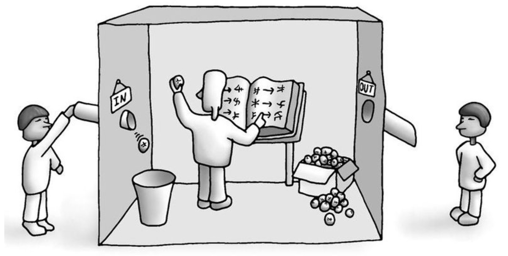
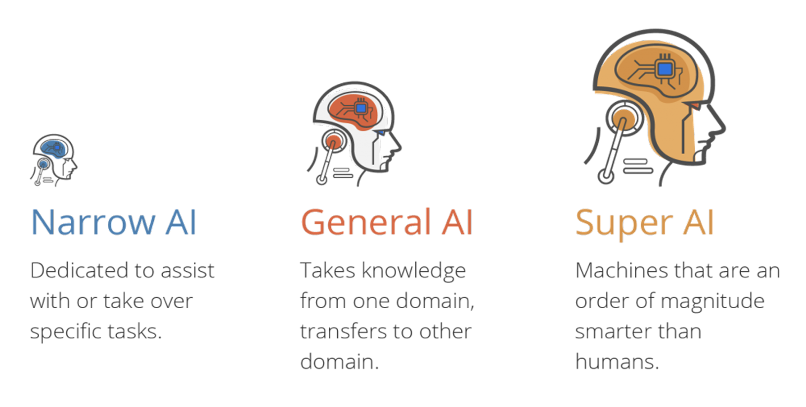
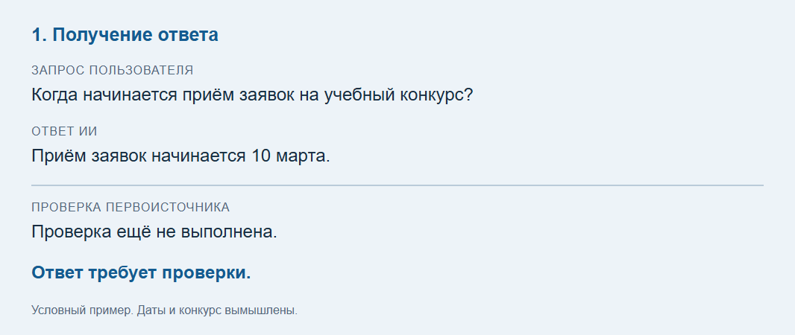
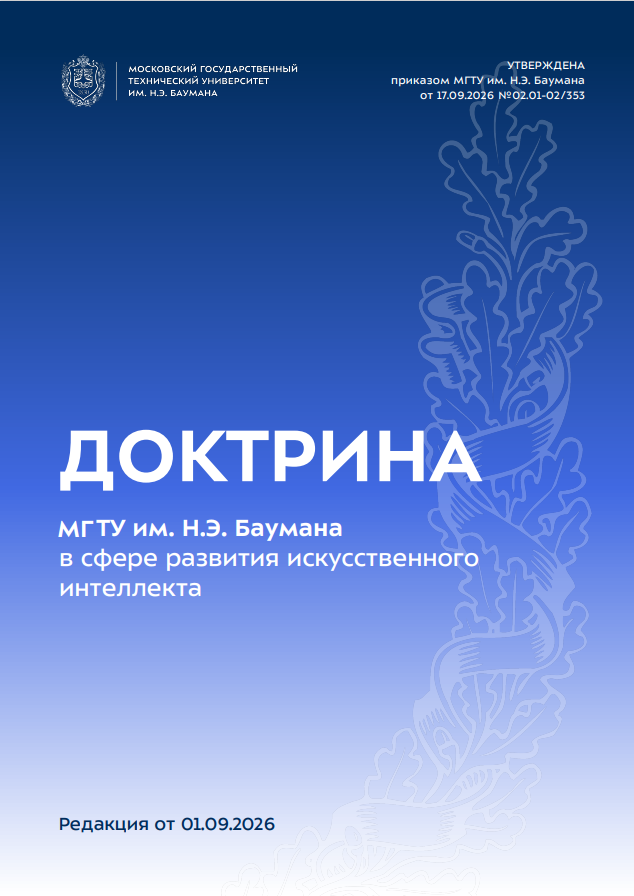

Тест Тьюринга (1950)
«Может ли машина думать?»
Лабораторная работа № 2. Вариант 1. Хоченков Алексей Игоревич, ИУ3-31М
Нажмите на слайд для показа. Стрелки и пробел — переходы, Esc — обзор, F — полный экран.
Мультимедиа технологии
Московский государственный технический университет
имени Н. Э. Баумана
Хоченков Алексей Игоревич
студент группы ИУ3-31М
«Может ли машина думать?»

«Понимает ли машина то, что делает?»

«Инструмент или агент?»
| Институт | Документ | Дата | Характер | Ключевое |
|---|---|---|---|---|
| ЮНЕСКО | Рекомендация об этике ИИ | 23.11.2021 | Рекомендательный | Первый глобальный стандарт, 193 страны |
| ООН (ГА) | Резолюция A/RES/78/265 | Март 2024 | Политический | Права человека в онлайн = права в офлайн |
| ООН (СПЧ) | Резолюция 42/15 | 07.10.2019 | Политический | Право на приватность в цифровую эпоху |
| ЕС | EU AI Act | 2024 | Юридически обязывающий | Риск-ориентированный подход, запрет массовой слежки |
Содержание таблицы перенесено из исходного PPTX.


Этика ИИ — это не тормоз для прогресса, а способ сделать его устойчивым.
Будущее ИИ зависит не только от инженеров, но и от того, какие ценности мы заложим в технологию сегодня.
Хоченков Алексей Игоревич
ИУ3-31М
alekshoch1@gmail.com